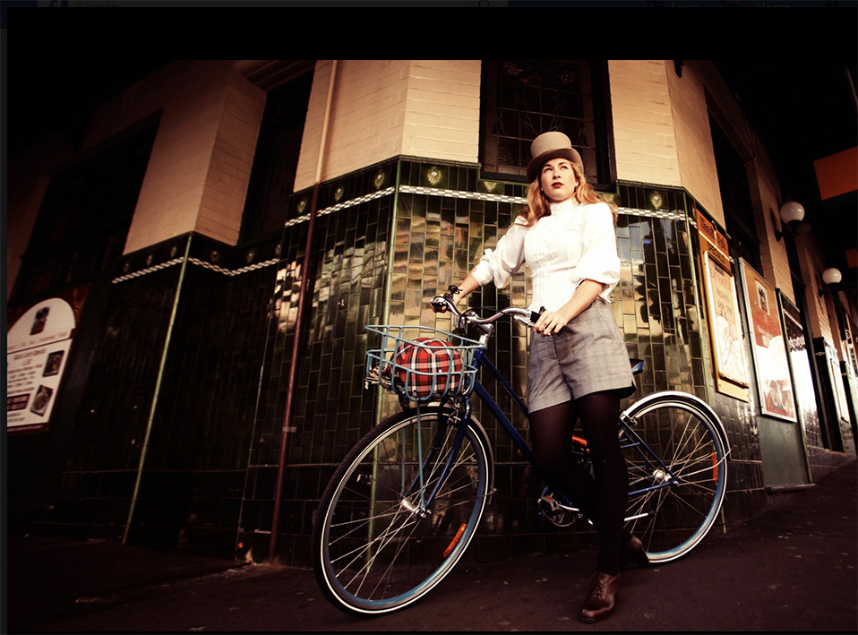

Bowerbirds - The Boweress
The proof is in the pudding
30 August, 2017
Jess, where do we even begin with you. Looking over your list of accomplishments and awesome communities you are engaged with, is simultaneously overwhelming and inspiring. We’re so pleased to rack your brain about some topics that we feel we have in common.
Before you became one of the youngest councillors in Sydney in 2016, what did you do?
I led a very, calm, serene and placid life…Naaaaaahhhh. Prior to being elected to council, I worked most of the time as the Program Lead for the 202020 Vision with the Republic of Everyone. But I’m quite restless, so on the side I was also doing some work to curate cultural talks down at Barangaroo, cultivating the Grow It Local project and I was also much fitter what with all the spare time I had.
What are some milestones of personal significance since joining council in 2016?
Realising that the job didn’t come with a magic wand was quite a milestone. It meant that a much steeper learning curve had to happen to understand how we are able to make change happen. Becoming the Deputy Lord Mayor was a huge honour, and the passage of the Late Night Trading DCP Review Notice of Motion was also very significant.
What is it like being a woman in council with the likes of Honourable Clover Moore and how are you seeing a shift for women in political representation?
At Council I am surrounded by courageous, feisty, intelligent and interesting women. Clover Moore is a constant source of inspiration and incredible fount of knowledge, but then we also have an incredible CEO (Monica Barone) and more than half of the elected members are also women, so fortunately at the City if Sydney there is a very strong sense of belonging.
More women in politics is better for everyone. As it stands the political institutions are not designed for women, it wasn’t until the 60s that there was a female toilet for what were then called ‘Aldermen’ at Council at the City of Sydney. So if it wasn’t for ‘Lavatory Lil’ demanding that they be installed so she could run, who knows how long this change would have taken. So for the system to be more accommodating of the needs of more than half of the population, it takes women like Lil and Clover, and indeed it is also my responsibility to keep redesigning the system so that more women are able to participate fully and more easily.
Tell us about the ‘Republic of Everyone’ and your favourite work project to date?
I’ve worked with the Republic of Everyone for the best part of 10 years in various guises. When Ben and Matt first started the agency, I was very much embroiled with grassroots activism and they were in the process of rejecting corporate advertising, or at least using the dark arts to change the world.
Ben and I still work very closely together. I have learnt so much about communication from him, and in turn he has trusted me with some of his most valuable clients and projects, of which there have been many. But the project I’m most proud of is the 202020 Vision which we have taken from a lofty idea to a broad and impactful collective impact program that is creating 20% more and better urban green space in cities by 2020.
You seem to keep adding roles to your profile rather than conducting a linear career path, how do you juggle all these responsibilities and is the future of work about the individual have multiple roles and how do we prepare for this?
I am resolutely non-linear and yes, my career trajectory would definitely reflect that. I think the future of work will require adaptability for sure – but this doesn’t suit everyone. Its also really important that people become real experts and go deep on topics and issues. Sadly for me, I don’t think I can sustain the attention span for that and am much more interested in making connections and working within the negative spaces of ordinary jobs.
You are such an active member of your community and an all-round advocator for women. What was your upbringing like and who or what inspired you to be who you are today?
I grew up on the Mornington Peninsula not far from Frankston on a herb farm. My Mum was at University most of the time when we were kids, so she didn’t really tolerate us whingeing about things that we didn’t like or if we told her we were bored – so the attitude of ‘if you don’t like it, change it’ has stuck I suppose. Mum has always been incredibly hard-working and committed and my Dad has always been incredibly supportive of that.
Over the years Sydney has been referred to as a ‘police or nanny state’ and there has been great discussion and contention over Keeping Sydney Open. It sometimes feels like Australia’s drinking cultural has contributed to a lack of personal responsibility…certainly on the streets. Growing up in a vibrant city like Melbourne, how is Sydney taking steps to reawaken our cultural identity and what challenges do we still face?
The danger in making public policy decisions based on the front pages of the newspaper is that there is little time to really consider the far-reaching consequences of these decisions nor the opportunity to base decisions on evidence and deep thought. That’s what we saw happen with the lockouts.
Part of the problem that led to the lockouts was alcohol and partly cultural, but there the other part of the problem was a failure of infrastructure or diversity of night time activities that also exacerbated some of the issues.
For the past 18months in council we have fought really hard to reinstate and provide everyone with the opportunity to reinvent and recreate the night time economy in Sydney, and do it in a way so that it’s not just based around drinking. The Late Night Trading DCP review is currently underway and is a planning reform that effectively reimagines what can happen in the city, until how late and where.
Upon its completion, we expect that it will unlock many opportunities for people to eat, shop, play sport, see music and theatre, work and study till much later and hopefully reintroduce Sydney as a truly 24-hour global City. Most importantly though, I won’t have to go down to Melbourne if I want to dance.
You’re an active environmentalist. What is your vision for Sydney in relation to this for the next decade?
The City has done an excellent job of setting the bar high in terms of environmental performance but to hit these targets and really make things work more sustainably we need for the State Government to meaningfully play its role. With their support I imagine that we’ll see renewable energy micro grids come online, mandatory water recycling for all new developments, and retrofitting for older ones, more green roofs and walls, increased canopy cover, less urban heat and overall a much more balanced urban ecology.
The Boweress is concerned with space, connectivity and how we can build community through this symbiotic relationship. Where is your bowery and what are some things that define this space or place for you?
If I want to be alone then my backyard is definitely the bowery. I have nearly 100 types of plants and grasses and things jammed into a very small space and I like to just potter and see how they’re all going.
If I feel like being around people then the park near my house is a really nice ‘bump space’ where we get to talk to neighbours and pat their dogs, and catch up on all of the gossip.
But ‘home’ will always be the herb farm. It’s where I was born and raised and remains largely unchanged, so its where I go to be still.
What’s on the cards personally and professionally for you this year?
It’s already been a big year. My long-term partner and I were married in February, work at Town Hall has been quite fast-paced, and we’re doing some great planning for the 202020 Vision.
I’m headed over to China and Japan at the end of May to represent the Lord Mayor which is a pretty wonderful opportunity, but apart from that I’m not too sure yet. No doubt something will happen.
